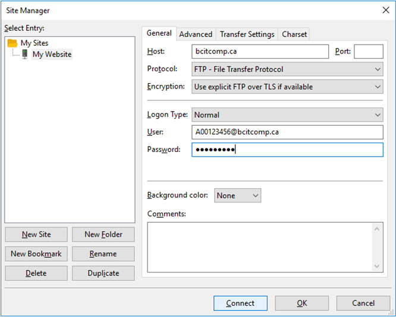
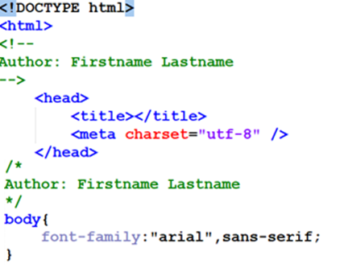
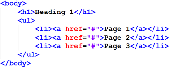
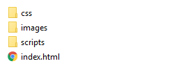

Agenda
Introductions
Orientation
Web development tools
Standards based development
To Do
Introductions
instructors: Jeff Parker (jeffrey_parker@bcit.ca),
Michael Whyte (michael_whyte@bcit.ca)
web site: this is it
all about you...
your name
your background
what do you hope to achieve in this course? Be specific!
Course Overview
Learn more about the course to help you determine if this is the right class for you.
Orientation: Sharefile
BCIT lab computers are re-imaged each day. Files you save on the local C: drive of a lab computer will
be erased after the computer power is cycled.
Options For Saving Files:
Use BCIT Sharefile to save your work
Save your work to your personal USB or cloud storage account
Use your own laptop in class, and dont use the BCIT lab computers
Orientation: Course Materials
COMP 1950 homework assignments, quizzes, in class exercises and example code can be accessed via Desire 2 Learn (D2L). Use your BCIT student number and
password to access D2L. Course materials will become avilable as the course progresses. It is your
responsibility to log in and download files as they become available.
If you have difficulty gaining access, consult the D2L
help documentation, or contact BCIT Tech help desk at 604-412-7444 (Toll free:
1-800-351-5533).
Orientation: Web space
Each student will get a personal webspace where you will publish your homework assignments. This is not
a continuation of your COMP1850 site (if you had one). This site is primarily for you to house your
exercises, assignments and group work. Make it a site that is usable and functional.
Your instructor will create webspaces for each of you.
Email your instructor this information:
your myBCIT email - eg: yourname123@my.BCIT.ca
your student number - eg: A00123456
a case sensitive password you will remember - ???
Take the name portion of your my.bcit.ca email address and use it at the end of the URL
described below (eg: if your email address is 'yourname123@my.bcit.ca', your email name is 'yourname123',
so your url would be 'http://bcitcomp.ca/students/yourname123'
For example: http://bcitcomp.ca/students/your_bcit_email_name
Connect to your bcitcomp.ca account via FTP
Use Filezilla, or any FTP client to connect to bcitcomp.ca. The bcitcomp.ca server provides you with a
space on the internet where you can publish your homework and assignments.
1. Choose: File->SiteManager->New Site, then describe the FTP server, eg "bcitcomp.ca"
2. Host: bcitcomp.ca
3. Port: 21
4. User: {yourBCITStudentNumber}@bcitcomp.ca (use an uppercase A when typing your BCIT
student number)
5. Password: ???
6. Servertype: FTP File Transfer Protocol
7. LogonType: Normal
8. Click: Connect
9. If you experience connectivity problems, re-check your input, or ask your instructor for assistance.

Tools: Visual Studio Code
There are several development tools to choose from. In COMP 1950 we will use the open source Integrated
Devlopment Environment (IDE) from Microsoft called Visual
Studio Code (VS Code). This is more than a simple text editor, it provides robust code
editing, maintenance and testing features, as well as supporting plugins to further increase it's
capabilities.
Lab Computers
VS Code should already be installed on COMP1950 lab computers. The executable is found at C:/Program
Files/Microsoft VS Code/Code.exe
Laptop / Home Desktop
Download VS Code for Windows, Mac or Linux.
Exploring VS Code
Your instructor will demonstrate some of it's capabilities in class. On your own time, you may wish to
review the help documentation 'Get Started'
section to give yourself a better understanding of some of the basic features and functions provided by
VS Code.
Setup and basics of VS Code
VS Code help documentation
Tools: Browser-based development
There are three major web browser platforms to consider:
Mozilla
This is the platform that Firefox runs on
Mozilla Foundation's web platform created by web developers
Gecko rendering engine: fast and progressive
Excellent level of standards compliance
Corporate independence
No built-in development tools
Plethora of add-ons that make web development easy
Add-ons have a downside: bloat
WebKit
This is the platform that gives us Chrome, Safari and Opera, with a few other smaller browsers out there as well.
Excellent platform that is very fast and standards compliant
Third parties can download the source, make local adjustments and release their own version, as Google and Apple have both done
Standalone version can be downloaded at any time for the latest release
Development is done via the built-in Developer Tools
Initially a thin environment, recent releases have made Webkit-based browsers excellent for developers
Macintosh based developers may need to enable web developer options in Safari before accessing the developer tools
Microsoft
The vendor for Edge and Internet Explorer
Microsoft's Edge is a major improvement on it's previous browser offerings.
Edge offers very good standards compliance and browser tools.
Do NOT use Internet Explorer as your development browser. It is one the least standards compliant of the browsers. It is also no longer supported with updates.
Remember to test your work in as many browsers as you can! BrowserShots allows you to do basic testing for earlier versions of Chrome, Firefox, Safari, and Opera. If you need to test for early iterations of IE, try: Netrenderer
Tools: Extensions
Extensions can add more functionality and features to your development browser.
The Web Developer Toolbar is available for Chrome, Firefox and Opera. Some useful features include:
Disable styles - by embedded/linked/inline as well as all styles, or just a single sheet
Edit CSS & HTML - Make live changes to your CSS or HTML!
Images - outlining, file sizes, alt information... lots more
Form detail - useful for working with form elements
Cookie examination and manipulation
Built in validators
Line Guides & Rulers
Element inspector
Search online to see what is available for your development browser:
Ad blockers
Password managers
Drawing on HTML pages
Text to speech
Etc, etc!
Browser Based Diagnostic Tools
As web pages get more complex, it can become difficult figuring out what is going on. For example, CSS rules that override other CSS rules, if spread across several files, can be challenge to make sense of. Having a diagnostic tool to assist in developing will make it easier to examine every detail of web pages.
Most modern browsers have some kind of development environment that can be turned on or triggered via extensions and/or plug-ins.
Web Browser Tools
Firefox
Chrome
Safari
Edge
Get familiar with using one of these tools. They are invaluable for understanding code and for finding, diagnosing, and fixing problems with code. You will be required to use them in the classes ahead. Practice adding/editing/removing both HTML and CSS using your development browser's built in tools.
Typical Features
F12 key will toggle open/close the tools in most browsers
The Elements/Inspector tab provides an overview of the HTML and CSS
The Select tool can be used to analyze the structure of the page and understand he status of box models
The Console will display Javascript behaviours and error messages
NOTE: changes you make with the tool are client based, and do not affect the server side HTML/CSS files. Client side changes made with this tool are temporary (they will be lost upon page refresh).
The capabilities of these browser tools go well beyond outlining, examining and editing. They provide deep troubleshooting capabilities of the HTTP network, javascript and even XHR (XMLHttpRequest).
Standards: W3C
Just as those who manufacture physical goods are expected to follow the International Organization for Standards (ISO), web developers are expected to adhere to the standards described by the World Wide Web Consortium (W3C)
W3C: World Wide Web Consortium
Web standards have gone through the same process that the ISO went through
Many companies see the benefits of interoperability - a few are still "forging their own"
Many companies have standards: Adobe, Microsoft, Apple, Ford, GM
Many are proprietary standards, and are not supported by other companies
W3C - World Wide Web Consortium: founded by Tim Berners-Lee to try and uniformly put forward standards through a single communication vehicle
Leading browser makers did not follow, initially
Designers were 'taking sides' in the browser wars: users were losers
Most modern browsers are fairly standards compliant
W3C Goals
1. Universal Access: To make the Web accessible to all by promoting technologies that take into account the vast differences in culture, languages, education, ability, material resources, access devices, and physical limitations of users on all continents;
2. Semantic Web: To develop a software environment that permits each user to make the best use of the resources available on the Web;
3. Web of Trust: To guide the Web's development with careful consideration for the novel legal, commercial, and social issues raised by this technology.
Why web developers should follow W3C standards:
Your pages will be viewable in the largest number of browsers
Increase interoperability with other clients (search engines, screen readers)
Web sites will gracefully degrade as support for CSS or other presentation layers are absent.
Code that doesn't follow standards cannot be expected to behave predictably in the various web browsers
Non standard code is hard to support
Re-engineering and/or maintaining poorly coded websites can be very difficult, costly and time consuming
Discussion:
What is the current W3C recommended version for HTML?
What is the current W3C recommended version for CSS?
What are the consequences of using a non-standard version?
Learn more abou the W3C and standards based devlopment from the Web Standards Project.
Standards: Web Development
Three goals of standards-driven web development:
1. Compatibility (creating web pages that work well in all browsers)
2. Portability (writing code that works well in any computing environment/operating system)
3. Accessibility (produce web pages that are optimized for search engines, screen readers, etc)
Requirements
HTML + CSS + DOM = Agile Web Sites
Structurally valid HTML code (eg: tags that open are closed. parent-child tag relationships are valid, etc)
Logically valid HTML code (eg: ids are not applied more than once per page)
Syntactically valid CSS code
Use external CSS to develop sites that separate content (HTML) from presentation (CSS)
Using Semantic Markup to establish content relationships and logical deployment of content
Use a single codebase (no browser sniffing, forked code)
Consider special needs users with screen readers. A common browser used with screen reader software is Webbie
Standards: File and Folder Naming
HTTP urls cannot contain certain characters, and certain characters will cause unwanted effects and behaviours when used in a url. Follow best practices for all file and folder names:
File and folder names should NOT contain:
Capital letters
Spaces
Special characters: ! @ # $ % ^ & * ( ) + { } [ ] : ; " < > ? | etc...
Acceptable non-alphanumeric characters: . _ - ~
Filenames should either be descriptive of the file contents, or use the default page name: index.htm, index.html or index.shtml (or whatever your server default is)
Folder names should always be descriptive. Folder structure should be logical (eg: /hockey/nhl/canucks).
Standards: File Management
Including an index.html file in every folder on your server will ensure users cannot go snooping around your filesystem. the index.html file can be a blank HTML page if you like, as long as the user does not see a list of files when they request a folder
Browser caching can reduce excessive request/response transactions between client and server. however, some browsers may cache things like the CSS, so if the styles have changed since caching the client may not get the latest styles.
Ctrl + F5 (Cmd + F5 for Mac) will force a page reload. Very useful when developing on a localhost http server.
If a file name has changed, the browser will have to make a new request from the server. versioning your file names will ensure users always have the latest version of any file (for example styles_1.0.css, styles_1.1.css, styles_1.2.css, styles_2.0.css etc)
If there are files/pages on your server no longer being used, be sure to either remove them or locate them in a place where users are not going to accidentally find them
Standards: Code Style and Organization
In COMP1950 students are expected to present a readable, well organized code style:
Comment all code with your name (or nickname if you prefer). Do this for all text based files (.html, .css, .js, .php, etc)

In HTML, use carriage return and tabs to indicate parent-child tag relationships. Likewise, code your CSS to make it easy to see which rules are applied to each selector.

Separate different file types into folders. At minimum, keep all non-html files in their own folder. If you like you can make a dedicated 'html' folder for your .html files as well.

Use the .html extension for all HTML files (not .htm). Use the typical extension for all other text based files.
Write structurally valid HTML code: W3C HTML validator
Write syntactically valid CSS code: W3C CSS validator
Include a referer link on all your HTML pages:
<a href="http://validator.w3.org/check?uri=referer">validate</a>
Semantic Markup
Highly semantic HTML content is crucial for usability, accessibilty and search engine optimization.
What is Semantic Markup?
The practice of organizing your content into a structured hierarchy
Using appropriate tags to explain and describe the content
H1 ... 6 tags for summary headings
UL tags for unsorted, unranked, related points
OL tags for sorted, ranked, related points
Paragraph tags instead of double BR tags
HTML tables used for semantic value (tabular data), not for layouts
IMPORTANT: Separate Content (HTML) from Presentation (CSS)
Building Content Relationships
Use appropriate tags for headings, content, sub-content, lists
This builds a relationship that descends from the title of the page
Each section is a discrete piece of information
Headings summarize the following content
Citations, quotes, code samples can be contextualized by nearest heading
Logical vs. Physical Styles
Tend to display identically in browsers, but are fundamentally different
Physical styles define what content looks like
Logical styles define what content is
Logical styles are important for screen readers, physical styles are not
Given a choice, logical styles are usually preferred
Some physical styles:
b - Bold
i - Italic
s - Strikethrough
u - Underline
Logical Styling
Best way to markup content for long-term usage
Use CSS to change style (and some behaviour)
Use DOM to change behaviour (via scripting)
Requires thinking ahead
Examples of logical styles:
strong - Increase importance
em - Add Emphasis
code - Code sample
kbd - Keyboard entry
samp - Programming sample
var - Variable
cite - Citation
dfn - Definition
abbr - Abbreviation
acronym - Acronym
del - Deleted text
ins - Inserted text
>Key Advantages Of Semantic Content
Content is relational - context can be determined easily
Extracting important pieces of information is simple (CITE or CODE tags for example)
Search engine optimization (SEO)
Syndication
Big win for frameworks such as jQuery
Screen reader friendly
Increased Accessibility
Separating style (CSS) from structure (HTML), makes it easier to maintain
To Do
Download, review, and complete the homework assignment from D2L
Confirm you have access to your online webspace and that your FTP credentials are valid
Be sure you know how to add/edit/remove HTML and CSS using a browser tool
Install VS Code on your home computer or laptop. Explore some of the accompanying help documentation to familiarize yourself with how to code your HTML and CSS using this tool.
Download VS Code
Setup and basics of VS Code
VS Code help documentation
...and yes, there will be a practical, open book quiz at the start of session #2! (hint: practice using a browser based diagnostic tool)
Agenda
Charsets
HTML, XHTML, HTML5
Semantics
Forms, SVG, Multimedia
To Do
Character Sets And Languages
The W3C recommends the UTF-8 charset for web development. It includes an impressive array of languages and special characters, and is well supported in common devices.
Assign Character Set
If it is not specified, a web browser will choose the character set it thinks is most appropriate, but it is a better practice for the developer to ensure the correct character set by applying the meta tag to the head section of every HTML page:
<meta charset="utf-8" />
Write all your text-based code (.html, .css, .js, .php, etc) in UTF-8. At development time, ensure your text editor is saving files in this format. This setting is usually found in the application's Preferences menu option.
Unless your audience includes very old browsers, you can code special characters directly into the HTML (you dont need to use HTML entities for most special characters).
You cannot copy-paste rich text (such as Microsoft Word, or WordPad) into your HTML. The rich text formatting may result in an unreadable mess.
An HTTP server can over-ride your charset preferences when it generates the HTTP header. Details on how to control this will be discussed later in this course.
HTML lang Attribute
Use the lang="" attribute to declare the language in HTML. This is usually applied to the html element. Assigning the appropriate language code will apply to all contained content, unless over-ridden with another lang="".
Use the language abbreviations from the standard ISO 639-1 code set (don't use ISO 639-2).
HTML
What started as a language defined by SGML (Standard Generalized Markup Language), HTML is used to mark up billions of pages, making up the bulk of the web.
Late 1991, Tim Berners-Lee releases the first iteration of what would become HTML 2.0 (there was no real 1.0+)
HTML was a language created at the dawn of the Web, using SGML (Standard Generalized Markup Language) as a template
Over the next decade, various additions, improvements and changes are introduced
HTML 4.01 released in December 1999
Initially used for documents and a place for the technically inclined, the web did not have the international pervasiveness it does today
Most developers were new to the language and there were no real classes in it
People had to learn as they went along
A lot of early sites are poorly designed
HTML 4.01 template
The problem with the state of HTML then was its reputation as a loose language. Poorly structured code would be rendered differently across user agents, leading to forked code and less predictable results.
XHTML
The XHTML specification was the result of rewriting HTML 4.01 using the ruleset derived from XML
HTML 4.01 + XML = XHTML 1.0
X = eXtensible
X = XML related
Better, more predictable coding patterns.
Verifiable or "well-formed" code can be produced.
Forces a higher standard of HTML.
Predictable behavior across user agents.
Porting to HTML5 is easy (if you also observe semantic guidelines).
XHTML Rules:
All elements must be properly nested
This is not valid: <p><b>Bolded Text</p></b>
This can be a problem with things like Lists <ol> and <ul>.
Especially when closing the List Item <li> tag that contains the <ul> or <ol> tag.
All tags must close
Example: <p>Some text here</p>
Empty Elements are closed as well: <br /> or <img src="#" />
An extra space is required before the slash to work with all browsers.
All tag names must be in lower case
<Img Src="some_image.gif"> is not valid
Attribute names are always in lower case
<p ALIGN="center"> should be <p align="center">
All attributes must be quoted
<body bgcolor=black> will not work, you need: <body >
Attributes cannot be minimized
<input type="checkbox" checked> cannot be used. The valid code is: <input type="checkbox" checked="checked" />
Name Attribute is no longer used (except with forms). Replace "name" with "id".
<img src="picture.gif" name="myimage" /> will not validate. Use id="myimage" instead.
Mandatory Elements: Every XHTML document must have these elements:
<html>
<head>
<title>
<body>
The <!DOCTYPE> declaration must be there, but it is part of the document itself rather than an element of the document.
Documents must be well-formed
The document must conform to all of the above rules
Optional XML declaration
Not required, but good practice:
<?xml version="1.0" encoding="ISO-8859-1"?>
Optional Element: An XHTML document should also declare the type and character encoding in the head section to ensure the server sends the correct content-type header:
<meta http-equiv="Content-Type" content="text/html" charset="UTF-8">
XHTML 1.0 template
HTML5
As of October 28, 2014, HTML5 is the official W3C recommendation
HTML5 is more evolutionary then revolutionary. The bulk of previous HTML elements and attributes are maintained, with a few deprecations, and several additions.
Significant features include:
Ultra simple Doctype: <!DOCTYPE html>
Specifies how browsers should behave with imperfect code
Ability to embed XML, MathML or SVG markup.
Standardized Javascript API increases client side script compatibility across browsers
Backwards compatible - older versions of HTML can effectively be updated by simply changing the doctype to HTML5
Guiding principles: Enhance semantic coding, Support existing content, Pave the cowpaths
HTML 5 template
Paving the Cowpaths
Common developer practices have been simplified
Finally a DOCTYPE we can all remember:
<!DOCTYPE html>
Declaring the character encoding is easier:
<meta charset="utf-8">
When linking to external stylesheets the type attribute is not required:
<link rel="stylesheet" href="style.css" />
When embedding CSS the type attribute is not required:
<style></style>
Including javascripts is simplified as well (type attribute is not required)
<script src="javascripts.js"></script>
HTML5: Enhanced Semantic Coding
It is crucial for all HTML content to be semantically marked up. This is how browsers, search engines, and screen readers make sense of online content.
HTML5 provides more than just adjustments to the markup, there are new, powerfully semantic elements:
<article> is an independent piece of content in a document (it could stand alone if removed from the page). an article might be a blog post, forum thread, news story, collection of product information, etc
<aside> is for content "only slightly" related to the main page content. asides fill the role of a sidebar. if the content could be removed without reducing the meaning of the main content of the HTML document, then use an aside
<header> and <footer> are for the header or footer of a page
<nav> represents an area for navigation
<main> used for containing content that is focused on the central topic of the page. this content is usually unique to the page, and not shared by other pages (main will usually NOT contain navigations, footers, sidebars, etc)
<figure> will likely contain an img or graphic. self-contained content (could usually be removed from the page and stand on its own). allows for captioning of embedded content like an image graphic or video. if you want to associate a caption, add a figcaption child
<figcaption> used as first or last child of figure to define the caption or legend for a figure
These represent some big changes in HTML, allowing for more flexibility in coding and specifying content. Many of these will replace and reduce the need for many div tags. eg: instead of the typical <div id="header">, use <header>.
Having trouble deciding which tag to use for what content? Try this HTML5 flowchart.
HTML5 Semantic Alterations
HTML5 also brings a few notable semantic alterations to older tags:
<a> though still an inline tag, it is now ok to nest multiple block level tags (headings, paragraphs etc) inside an anchor tag
<small> no longer a 'physical' tag for smaller sized print, it now has semantic value: meaning 'small print', i.e. 'legalese'. the big element has been deprecated
<b> no longer means 'render bold'. now it means the text is 'stylisticly offset from the normal text', without conveying any extra importance. to convey extra importance, use <strong>
<i> now means the text is 'in an alternate voice or mood', without conveying any extra emphasis. to convey extra emphasis, use <em>
Deprecated tags: <big>, <font>, <strike>, and a few more. Developers should use CSS instead of these deprecated tags.
Deprecated attributes: align, bgcolor, border, height, size, type, width and more. Developers should use CSS instead of these deprecated attributes.
HTML5 Content Models
Pre-HTML5, there were basically two categories of tags: inline and block. HTML5 intoduces a more nuanced set of categories that allow for greater semantic sectioning of content. The content model will help the browser to determine the semantics of your content.
Content Models
text-level content: most inline tags
grouping content: most block tags
replaced content: all the form widgets and related tags
embedded content: video, audio, canvas
sectioning content: new structural, semantic options
Sectioning Content
The <section> tag can be used to semantically group content. It can remove ambiguity when a page is being processed by the browser, a screen reader, or search engine.
For example, imagine you have created the following code:
Since content that follows a heading is presumed to be associated with that heading, the code above carries plenty of semantic value already. But, if the small tag's content is intended to apply to all cities, a browser has no way of knowing that. It will instead assume the small tag is associated with the preceding heading (<h3>Tokyo</h3>)
Use the section tag to explicitly demarcate the start and end of the related content:
This new sectioning will inform the browser that the small is associated with the h1
In HTML5, each piece of sectioned content has its own self-contained outline. This means you wont need to worry as much about which level heading tag to use. You can use an h1 inside a section and it will be treated as the heading of the section, and have lesser semantic impact than an h1 that is at a higher level.
Forms
HTML 5 adds several new form attributes that prove quite useful, even if some are as yet poorly supported.
placeholder="value": prepopulates field with data
autofocus="autofocus": sets the input to have cursor focus
required="required": ensures field is filled in before submission
There are also several new <input> type attribute variants:
type="email": checkes for the pattern of emails
type="url": web addesses
type="date": calendar popup
type="tel": telephone numbers
type="search": formats text input as search input
type="color": color picker popup
type="range": sliding scales
type="pattern": regular expression pattern matching
Scaleable Vector Graphics
Scaleable Vector Graphics (SVG) can be embedded into HTML5 documents. SVG are 100% scalable without the pixelated effect that scaled raster images can suffer from. SVG file data is stored as text, so they are much smaller in file size than a raster equivalent.
You can use SVG graphics with the img tag, just as with raster graphics. You can also use .svg as a CSS background-image.
<img src="images/logo.svg" alt="COMP 1950 logo" />
The png on the left is 26KB. The .svg on the right is only 4KB.
Alternatively, you can use SVG code 'inline' with the svg tag. The advantage of doing this is it will result in one less request/response between the client and the server. The disadvantage to inline SVG is that it adds considerable clutter to your your .html code. Just copy the source code from your .svg file and paste it directly into your .html!
<svg viewBox="0 0 55 28">
<!-- svg code goes here... sometimes there is a LOT of code here! -->
</svg>
SVG Tools
Use an SVG application to help you create and manipulate your SVG code.
Adobe Illustrator
Inkscape (Open source, Windows/Mac/Linux)
Multimedia
HTML5's more responsive multimedia features have made it easier to provide appropriately formatted video and audio to the client.
Audio
The audio element provides a way to offer many audio formats to the client, allowing the browser to choose the one most suitable.
The most common audio formats for the web are: audio/mp3, audio/mpeg and audio/ogg.
Each audio tag may contain:
source tags as children of the audio tag, one for each audio format available. Each source must have a src (path to audio file) and type (audio file MIME type)
controls="controls" give the user control over the audio *important for usability*
loop="loop" loop audio playback
preload="none" dont load the audio until the user clicks 'play', preload="metadata" preloads the clip duration statistic only, preload="auto" loads the audio clip to the client before they click 'play'
autoplay="autoplay" begin playing audio as soon as page is loaded *NOT very user friendly*
you may also wish to include a direct link for your users to download the file
<audio controls="controls">
<source src="media/house-a-square.mpg" type="audio/mpeg" />
<source src="media/house-a-square.mp3" type="audio/mp3" />
<source src="media/house-a-square.ogg" type="audio/ogg" />
</audio>
Download the audio
Video
The video element provides a way to offer many video formats to the client, allowing the browser to choose the one most suitable.
The most common video formats for the web are: video/mp4, video/ogg and video/webm.
Each video tag may contain:
source tags as children of the video tag, one for each video format available. Each source must have a src (path to video file) and type (video file MIME type)
controls="controls" give the user control over the video playback *important for usability*
set the size of the video (use CSS instead. absolute values only, no percentages)
poster="image.jpg" display a static image when the video is not playing
loop="loop" loop playback
muted="muted" begin with audio silenced
preload="none" dont load the video until the user clicks 'play', preload="metadata" preloads the clip duration statistic only, preload="auto" loads the clip to the client before they click 'play'
autoplay="autoplay" begin playing video as soon as page is loaded *NOT very user friendly*
you may also wish to include a direct link for your users to download the file
<video preload="none"
controls="controls"
poster="media/poster-bear-in-water.jpg">
<source src="media/bear-in-water.webm" type="video/webm" />
<source src="media/bear-in-water.mp4" type="video/mp4" />
<source src="media/bear-in-water.ogg" type="video/ogg" />
</video>
Download the video
HTML5 Today
User agent browsers will have varying support for the HTML5 specification.
caniuse.com is an excellent source for compatibility testing
Try the HTML5Test to test a specific browser.
To ensure early versions of Internet Explorer will render HTML5 tags correctly, you can add the HTML5 shiv:
- <script>document.createElement("article");</script>
- This creates an element called <article> which the browser (IE, in this case) can understand and style appropriately
- Creating an entry for every element can get a bit heavy, so you can use the HTML5shiv script written by Remy Sharp. Insert a coded-comment that will apply the shiv ONLY with IE browsers earlier than version 9:
- <!--[if lt IE 9]>
- <script src="http://html5shiv.googlecode.com/svn/trunk/html5.js"></script>
<![endif]-->
Since HTML5 understands both HTML4 and XHTML tags, converting an older HTML file into HTML5 is simply a matter of updating the DOCTYPE and meta tag for charset.
To Do
Download, review, and complete the homework assignment from D2L
Review the HTML5 semantic tags, know how and when to use them to maxmize the semantic strucure of your HTML
Agenda
Referencing Stylesheets
Importing
Fonts
Compact CSS
Advanced Selectors
Rule Specificity
To Do
Referencing CSS
When linking to external style sheets, there are a number of features to be aware of:
Each stylesheet requires it's own link tag
Multiple stylesheets can be loaded (main.css, fonts.css, layout.css, etc)
rel determines how the HTML will use the file linked to (REQUIRED)
href defines the path, relative or absolute, to the css file (REQUIRED)
type attribute is has been deprecated (dropped in HTML5)
title attribute allows the user to group stylesheets
media attribute allows you to specify what medium this should be viewed in
<link rel="stylesheet"
href="http://www.mysite.com/css/styles.css"
type="text/css"
title="Main Style"
media="screen" />
Media variations: media attribute
media="type" can be a powerful tool
Examples of media types:
all - well supported, commonly used (DEFAULT)
aural
braille
embossed
handheld - not common (smart phones identify as screen)
print - well supported, commonly used
projection
screen - well supported, commonly used
tty
tv
Note that most smart phone devices (iPhones, Andriod, etc) do not identify themselves as media type handheld. The reasoning was that the devices were more than capable of displaying standard web sites, so they identify as screen
Alternate style sheets: rel attribute
You can also have alternate stylesheets supported
rel="stylesheet" defines the default stylesheets to use
rel="alternate stylesheet" allows different styles to be defined
Tip: If you have multiple sheets that belong to one "look" make sure they all have the same title
You can create alternate style sheets for users, allowing them to select which ones they would like to see
An example would be to create a 'Larger Text' style sheet with everything in a larger font, or providing an option for users to choose an austere, simple page instead of a colorful/image heavy stylesheet
Many browsers are now giving users the ability to select which sheet they would like to see. (Firefox: View > Page Style)
Alternate style sheets: title attribute
A stylesheet is "persistent" if it is linked with rel="stylesheet" and has no title attribute. All persistent stylesheets are always used when rendering
A stylesheet is "preferred" if it is linked with rel="stylesheet" and has a title attribute. these styles will be used as the default. preferred stylesheets with the same title are grouped together
Finally, a stylesheet is "alternate" if it is linked with rel="alternate stylesheet" and has a title. These stylesheets are supposed to allow the user to choose stylesheets, they are grouped together by title and show up in the browser's stylesheet selector if it has one (View > Page Style in Firefox). Each group (by title) is mutually exclusive.
Persistent Styles
Persistent styles apply in all cases, even when alternate styles are chosen.
<!-- rel="stylesheet" with NO title="" -->
<link rel="stylesheet"
href="css/persistent_styles.css" />
Preferred Styles
Preferred styles will be the default, but will be replaced if alternate styles are chosen.
<!-- rel="stylesheet" AND a title="" -->
<link rel="stylesheet"
href="css/default_styles.css"
title="Standard Styling" />
Alternate Styles
Alternate styles will not be applied by default, but may be chosen by the user agent. Each alternate stylesheet must have a title="".
<!-- use rel="alternate stylesheet" for alternative stylesheets... -->
<link rel="alternate stylesheet"
href="css/large_text.css"
title="Large Text Styles" />
Grouping Stylesheets
If more than one link tag shares the same title="" then they will be grouped together.
<-- group stylesheets with shared title="" -->
<link rel="alternate stylesheet"
href="css/monchrome_layout.css"
title="Monochrome Styles" />
<link rel="alternate stylesheet"
href="css/monchrome_fonts.css"
title="Monochrome Styles" />
To enable alternate stylesheet switching, you can either apply some javascript to manage the switch with hyperlinks, or use Firefox for alternate stylesheets.
@import: Managing Multiple CSS Files
You can use the @import method to import multiple stylesheets from a basic stylesheet that you link to. This will reduce the clutter that can sometimes occur within the <head> section.
It is also a great place to be able to manage your CSS. From your main document, create a <link> to your styles.css page.
In the body of the styles.css file, import as many files as you need:
@import url("css/type.css");
@import url("css/nav.css");
@import url("css/template.css");
NOTE: when using the @import directive in an external CSS file, ensure it comes before your CSS selector rules. It might be best to not include any CSS rules in a page that uses @import.
@charset: Assigning CSS Character Set
If your CSS files only contain standard keyboard characters, assigning the character set is not required. The CSS language itself does not use any exotic characters, so assigning a charset is often omitted. If, however, your CSS needs to use special characters, ensuring the correct character set can be
very important. Eg: When using a pseudoclass to add content to HTML content: "Äwesome!"
If needed, add the @charset rule to the top of the CSS document.
/* assign charset at top of .css file */
@charset "utf-8";
/* CSS rules follow... */
@font-face And Font Servers
Fonts that aren't available on the client machine can be provided by a third-party font server or by your website's server.
Google Fonts
Adobe Typekit
Font Squirrel
Plenty more available online...
Third Party Font Server
Browse the font server site, select the fonts you like and they wil provide you with code for a <link /> tag to add to your HTML. You can then use the font in your CSS.
<!-- add the link tag to the HTML -->
<link href="https://fonts.googleapis.com/css?family=Bungee" rel="stylesheet" />
/* use the font in the CSS */
selector{
font-family: 'Bungee', cursive;
}
No longer stuck with 'Arial', 'Helvetica', 'Georgia' and the rest.
Serve Fonts From Your Website
If the font(s) are copyright free, or if you have license to distribute a font, you can serve them yourself using the CSS @font-face directive.
Different client systems will need fonts in varying formats, so if you are distributing the font yourself, be sure to have the font available in most common formats.
Obtain the font(s) you wish to use. You must either have license to distribute the font or the font must be copyright free.
Upload your font(s) to a Font Generator to obtain a font kit including various formats for the font(s)
Uncompress the font kit and locate it somewhere with your website files
Use @font-face to load the fonts. The font-kit generated by Squirrel Font will include some same CSS to help you with the sometimes volumous coding
Apply the new font in CSS
/* load the font in CSS */
@font-face {
font-family: 'alex_brushregular';
src: url('/fonts/alexbrush-regular-webfont.woff2') format('woff2'),
url('/fonts/alexbrush-regular-webfont.woff') format('woff'),
url('/fonts/alexbrush-regular-webfont.ttf') format('tff');
}
/* use the font in CSS */
selector{
font: bold 20px alex_brushregular ;
color:#555;
}
Don't get carried away with wild font choices. Some fonts have very poor readability, reducing accessibility.
CSS Measurements
In CSS, there are a number of measurement values that can be used in declarations.
Size measurements
px - Pixels is one of the most common measuring types. It is specific to computers, as it renders based on the pixel-display of all monitors. Great for specific measurements on boxes and borders, but for fonts, it can lead to difficulty as some browsers don't allow scaling and font can end up too small
% - Percentage measurements are also very common.
em - A relative measurement of the letter "m" in the chosen font. This is a popular one for spacing around text, as it inherits the font dimensions
rem - Similar to em, this will inherit only the Root value, helpful for avoiding 'compound inheritance' values
pt - Points is an aold system related to type-setting that had a standard size for points. This is a relative size based on the users' system
pc - Picas is a very old system that was frequently related to typewritten documents. Rarely used.
ex - Similar to em, this is a relative measurement of the letter "x". However, it is rarely used, and not fully supported
vh, vw, vmin, vmax - size relative to viewport widths and heights. very useful for scaling, though may not enjoy full support yet
named - This refers to fonts and a few other elements. The named sizes are xx-small, x-small, small, medium, large, x-large, xx-large. They are relative to the browsers base font size
Color Measurement
Colors can be specified in a number of ways, corresponding to the system that your organization or visual element requires. Almost all color systems use a method for expressing a combination of the three color spaces used for displaying colors on computer monitors: Red Green and Blue.
Hex: #003366 - One of the most common systems, it combines 2 digits each for Red Green and Blue. Each hex pair stand stands for digits between 00 and FF in hexadecimal
Compact Hex: #f30 - This is almost identical to the Hex version, except that when three numbers are used, most browsers will just double-up each digit. So, #f30 will become #ff3300
Named: cornflowerblue - Although the official W3C specification only lists 16 named colors, almost every browser supports the various named colors
RGB: rgb(255, 0, 255) - This allows the user to specify the same thing as Hex, but in Decimal format
RGB %: rgb(100%, 0%, 50%) - Almost identical to RGB, but with percentages of each color space instead
Compact CSS Code
When building your CSS rules, there are some easy ways to compact your code, reducing code bloat and filesize.
Grouping selectors
If you would like to apply the same style to a multitude of different selectors, you can group them with the comma
h1, h2, h3, h4, h5 { color: red; }
This can be done with Elements, classes and IDs
Specific rules for H3 (for example) can come later
Grouping comes to Classes
As well as grouping Elements, you can also group classes
Define several classes: .cool{ color:red; } .wicked { border:1px solid black; }
Assign several classes at once: <p > will select both the cool and wicked classes
The order of the attribute values is irrelevant
Case is important! Remember to use a single rule for CSS naming and stick with it
>Rule Compacting
There are a lot of rules that will accept a compacted ruleset:
margin: top right bottom left;
padding: top right bottom left;
border: width style color;
font: font-style font-variant font-weight font-size/line-height font-family;
background: color image position repeat size attachment;
Box model properties support 1, 2, 3 and 4 values. For example:
border-width:10px;
all four borders are 10px
border-width:10px 20px;
top and bottom borders are 10px
left and right borders are 20px
border-width:10px 20px 30px;
top border is 10px
left and right borders are 20px
bottom border is 30px
border-width:10px 20px 30px 40px;
top border is 10px
right border is 20px
bottom border is 30px
left border is 40px
Note you do not need to specify values for all fields in a compact rule. Just keep the space delimited list in the correct order. For example, you could specify several font values all at once:
font: italic small-caps bold 1.3em "helvetica", sans-serif;
or, specify only a select couple.
font: 1.3em "helvetica", sans-serif;
CSS Selectors
There are several advanced CSS selector techniques that provide plenty of options for the application of style.
Universal Selector
This is a fairly widely supported selector: the asterisk *
Use it to specify a global rule
* { color: red; } will make all font color red on your page
The universal selector can be very powerful, as it can command a lot of changes to your styles,
Pseudo-classes
A Pseudo-class is a selector that allows you to reference a specific action or attribute of an element. This is most often used when specifying a attributes, such as :visited and :link.
There are other uses for pseudo elements, that will allow for greater detail in styling content, such as :first-letter and :first-line. These allow the browser to apply a style based on an unselected, but displayed element.
Best part: No span or div required to access these pseudo-elements.
Within a pseudo-elements in particular, it's important to follow a certain order:
a:link
a:visited
a:hover
a:active
Easy mnemonic: LVHA - LoVe - HAte. Because of the way that CSS applies rules, it looks at the LAST rule for a given element and applies more weight to it. For example, if you are hovering over a link, you don't want to see the link state
There are several additional pseudo-classes and pseudo-elements
selector:before, selector:after - add text content before or after the selector's content
selector:first-line, selector:first-letter - style the first line or letter of the selector
selector:first-of-type, selector:last-of-type - style the first or last tag of the selector type
selector:nth-of-type(n) - select the nth() tag of the same type as selector
selector:nth-child(n) - select the nth() child
selector:nth-child(2n) - select every even numbered child
selector:nth-child(2n+1) - select every odd numbered child
Descendant Selectors
Separated by a space, the last element is the one being styled
h1 em will apply rules to all em's within an h1
You can have as many as you want: ul ol ul li
Great for specifying different styles when they apply only in certain areas
#nav a { ... } will only apply these rules to Anchors within the div called nav
Degree of separation can be infinite, so be careful
p em will match ANY em that descends from a paragraph, no matter how nested
Child Selectors
Uses the > combinator to specify children
Will select an element that is directly descended from another element
p > strong will only select a strong tag that is inside a paragraph
Will not select a strong tag embedded in any other tag (even if it is within a paragraph)
Adjacent Sibling Selectors
The + combinator specifies the first sibling tag following the root
It will not include the root for styling
div + h2 will select the first sibling h2 following a div tag
General Sibling Selectors
The ~ combinator specifies all siblings tags following the root
It will not select sibling tags that precede the root, nor will it include the root
h1 ~ h2 will select all sibling h2 tags that follow an h1
Attribute Selectors
You can also select elements by what the element contains
The method is: element[attribute=value]
If you specify an attribute with no value, you will match any element that simply has the attribute present (no matter what it's value is)
p[align] {color: red;} will turn red any paragraph that contains an align attribute
Similarly, img[alt] {border: 1pt red solid; } will draw a red line around all images with an alt attribute
You can further direct the attribute selector to find content that is at the beginning (using the carat: ^), somewhere inside (using the asterisk: *) or end of a value (using the dollar sign: $)
Attribute selector examples:
img[alt] - select all img tags that have alt attributes
img[src="images/pic.jpg"] - select img tags whose src is 'images/pic.jpg'
img[src^="gallery/"] - select all img tags whose src BEGINS with 'gallery/'
img[src*="logo"] - select all img tags whose src CONTAINS 'logo'
img[src$=".png"] - select all img tags whose src ENDS with '.png'
Rule Order & Specificity
When a style declaration is found to be in conflict with a previously declared style, there is a method for determining which one will win out. The process is built into every web browser, and almost all of them calculate the values identically (for once!).
Here is how the W3C defines the process by which style order is determined:
Discover all declarations. Find all declarations that apply to the element and property in question, for the target media type. Declarations apply if the associated selector matches the element in question.
Sheet Order. The primary sort of the declarations is by weight and origin: for normal declarations, author style sheets override user style sheets which override the default style sheet.
Note: For "!important" declarations, user style sheets override author style sheets which override the default style sheet. "!important" declaration override normal declarations. An imported style sheet has the same origin as the style sheet that imported it.
Specificity: The secondary sort is by specificity of selector: more specific selectors will override more general ones. Pseudo-elements and pseudo-classes are counted as normal elements and classes, respectively.
Sort by Order: Finally, sort by order specified: if two rules have the same weight, origin and specificity, the latter specified wins. Rules in imported style sheets are considered to be before any rules in the style sheet itself.
All of the rules are pretty straightforward, except for Specificity, which bears some explanation.
Specificity is a method for determining what rules are applied when a conflict between two selectors occurs. Through a method of adding values when certain elements and selectors are present, a specificity number can be applied to any CSS rule. The one with highest specificity wins and the associated rule is applied to the element(s) in question.
Ruleset for Specificity
Style sheets can also override conflicting style sheets based on their level of specificity, where a more specific style will always win out over a less specific one. It is simply a counting game to calculate the specificity of a selector.
1 Count the number of IDs in the selector.
2 Count the number of CLASS, pseudoclass, and attribute selectors.
3 Count the number of HTML tag names in the selector.
Next, write the three numbers in exact order with no spaces or commas to obtain a three digit number. (Note, you may need to convert the numbers to a larger base to end up with three digits.) The final list of numbers corresponding to selectors will easily determine specificity with the higher numbers winning out over lower numbers. Following is a list of selectors sorted by specificity:
#id1
/* id=1 class=0 HTML=0 --> specificity = 100 */
UL UL LI.red
/* id=0 class=1 HTML=3 --> specificity = 013 */
LI.red
/* id=0 class=1 HTML=1 --> specificity = 011 */
LI
/* id=0 class=0 HTML=1 --> specificity = 001 */
!important rule
This declaration, when added to a rule, will override almost all other declarations, with no respect for specificity.
It indicates that this rule should take over any previous rules that might govern a specific element.
Example .selector{ color:blue !important; }
This rule can cause havoc if overused, as it will overrule any other declaration with the same selector. Be careful with !important
To Do
Download, review, and complete the homework assignment from D2L
Find a partner for your homework.
Practice using advanced CSS selectors